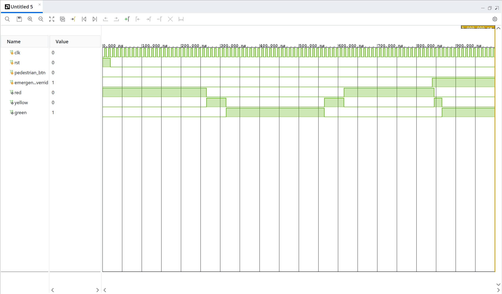
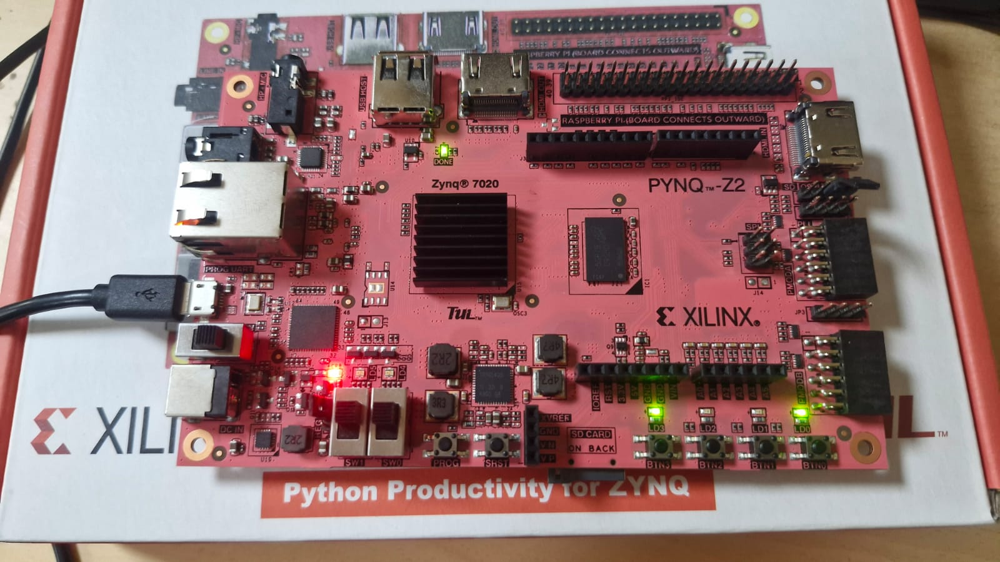

To design and implement a Smart Traffic Light Controller utilizing a Finite State Machine (FSM), featuring pedestrian interrupt capabilities and an emergency vehicle preemption system.
stateDiagram-v2
[*] --> NorthSouthGreen
NorthSouthGreen --> NorthSouthYellow : Timer / Interrupt
NorthSouthYellow --> EastWestGreen : Timer
EastWestGreen --> EastWestYellow : Timer / Interrupt
EastWestYellow --> NorthSouthGreen : Timer
state EmergencyPreemption {
[*] --> AllRed
AllRed --> EmergencyClear : Clear Signal
}
NorthSouthGreen --> EmergencyPreemption : Emergency Signal
EastWestGreen --> EmergencyPreemption : Emergency Signal
NorthSouthYellow --> EmergencyPreemption : Emergency Signal
EastWestYellow --> EmergencyPreemption : Emergency Signal
The Smart Traffic Light Controller is primarily driven by a Finite State Machine (FSM). - FSM Logic: Controls the sequence of states: North-South Green, North-South Yellow, East-West Green, and East-West Yellow. The transitions are governed by timers. - Pedestrian Interrupt: When a pedestrian button is pressed, the FSM safely transitions the active green light to yellow and then to red, allowing pedestrians to cross safely. - Emergency Preemption: An emergency signal forces the FSM into a high-priority state (e.g., all red or specific direction green) to allow emergency vehicles to pass without delay. - Debounce Logic: Since the pedestrian buttons and emergency switches are mechanical, debounce circuitry is implemented to ensure clean, glitch-free single pulses are sent to the FSM.


The Smart Traffic Light Controller was effectively implemented using an FSM. The integration of debounce logic ensured reliable input handling, while the pedestrian interrupt and emergency preemption features demonstrated the system's ability to handle complex, real-world, priority-based scenarios.